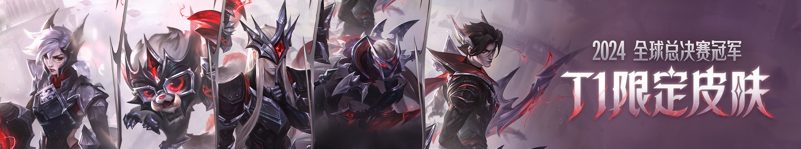

千年的沧桑，千年的蹉跎，大法师瑞兹踏遍了整个世界。寻找尚存的远古魔法符文，并将发现的符文保存在自己的奥术卷轴之中。虽然瑞兹对自己的同胞感情深切，但他却不得不与他们保持距离——这种两难境地也经常让那些被他保护的人误认为他轻率粗暴、喜怒无常。这个世界或许已经忘记符文魔法所释放出的恐怖力量，但瑞兹时刻都在保持警惕。
查看更多在年轻时，维克托就发现了他对科学与发明的激情，特别是机械自动化这一领域。他参加了祖安享有盛名的科技魔法大学，并带领了一支队伍，研发出了布里兹这一科学史上的突破，并期待着这项发明能够让他登上职业生涯的巅峰。不幸的是，他的傲人成果被斯坦里克教授给篡夺了。
查看更多